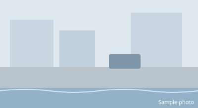

Flood reports
Every submitted report in one place, newest first.
SAMPLE DATA · TODAY
-
#1042
9:46 PM6 min ago
España Blvd.Brgy. 463, Sampaloc, Manila
 93%
Flood warning
Avoid the area
93%
Flood warning
Avoid the area
-
#1041
9:44 PM8 min ago
G. Araneta Ave.Brgy. Doña Imelda, Quezon City
92%
Flood warning
Avoid the area
-
#1040
9:39 PM13 min ago
Taft Ave.Brgy. 699, Malate, Manila
88%
Flood warning
Avoid the area
-
#1039
9:35 PM17 min ago
Marcos Hwy.Brgy. San Roque, Marikina

62% Possible flood Use caution - #1038 9:33 PM19 min ago Taft Ave.Brgy. 699, Malate, Manila 6% No flood Same area as #1040? Review local conditions
- #1037 9:22 PM30 min ago Rizal Ave.Brgy. 76, Caloocan 44% Unclear photo New photo requested
-
#1031
8:41 PM1 h 11 min ago
España Blvd.Brgy. 463, Sampaloc, Manila
88%
Flood warning
May be outdated
Avoid the area
Showing 1–7 of 12 reports · Sample data